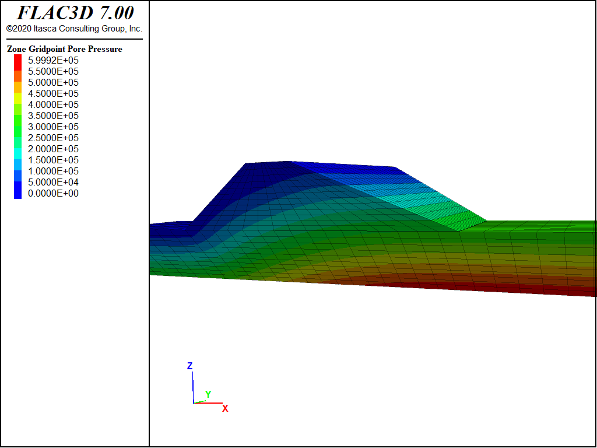
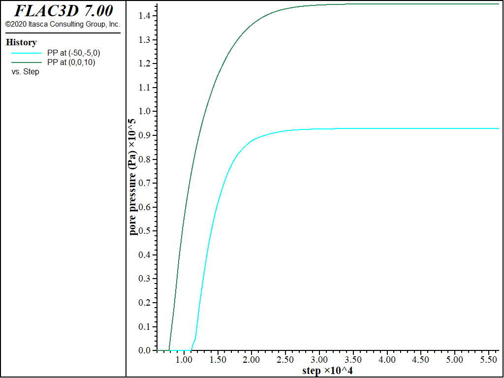
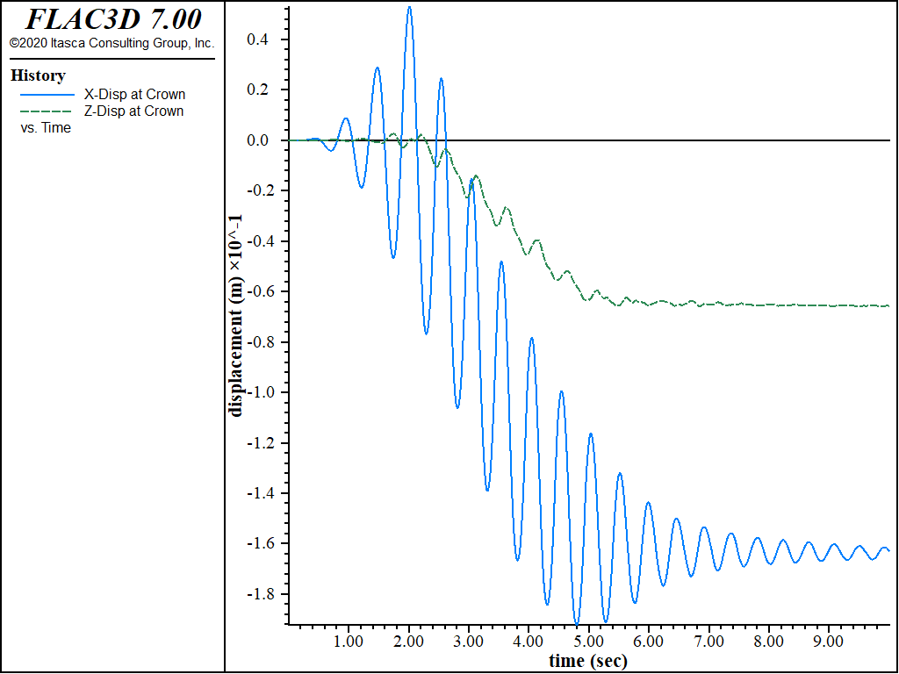
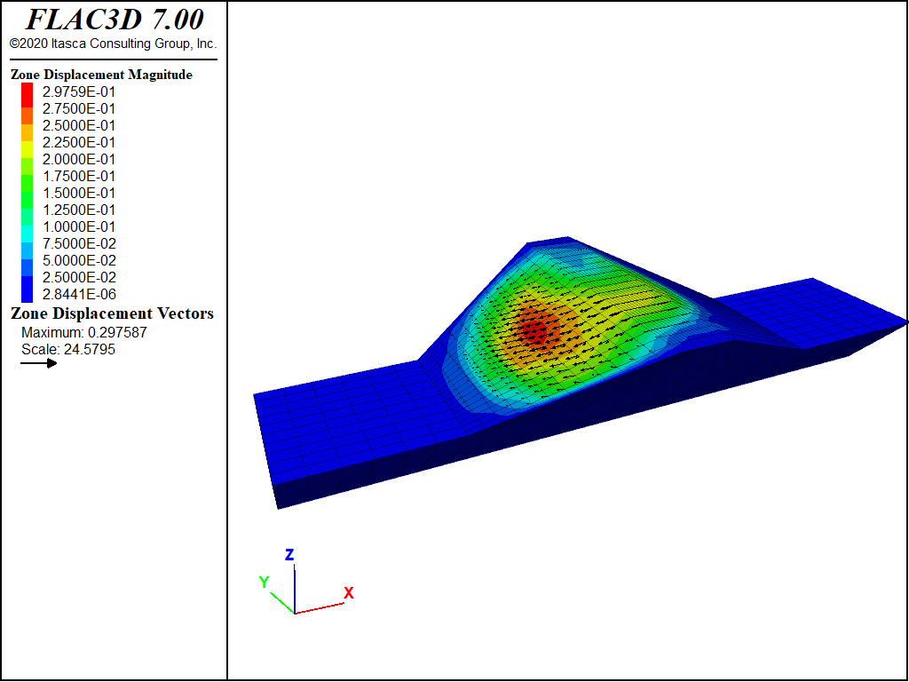
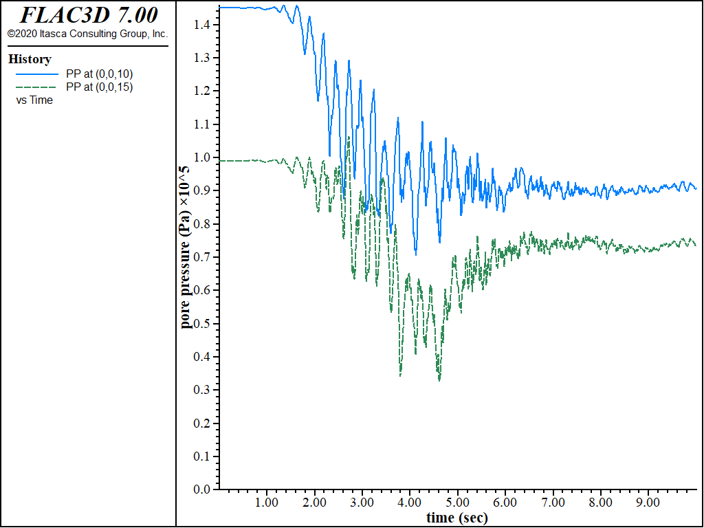
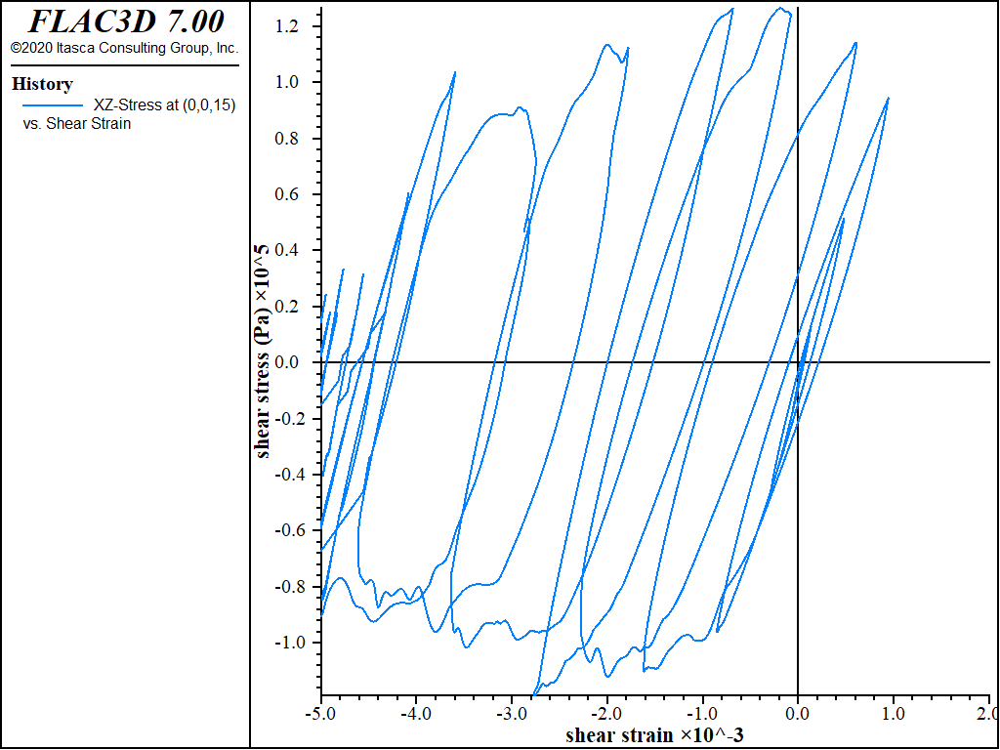
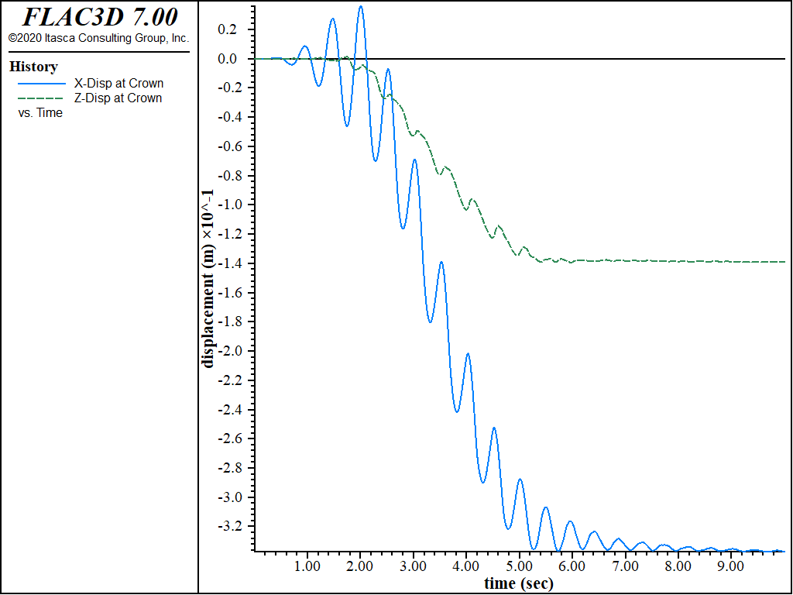
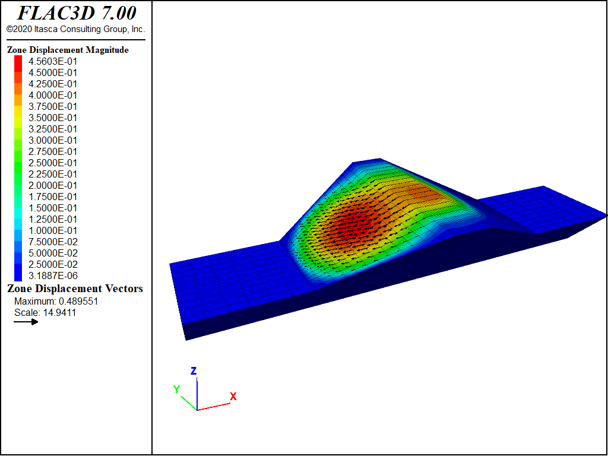
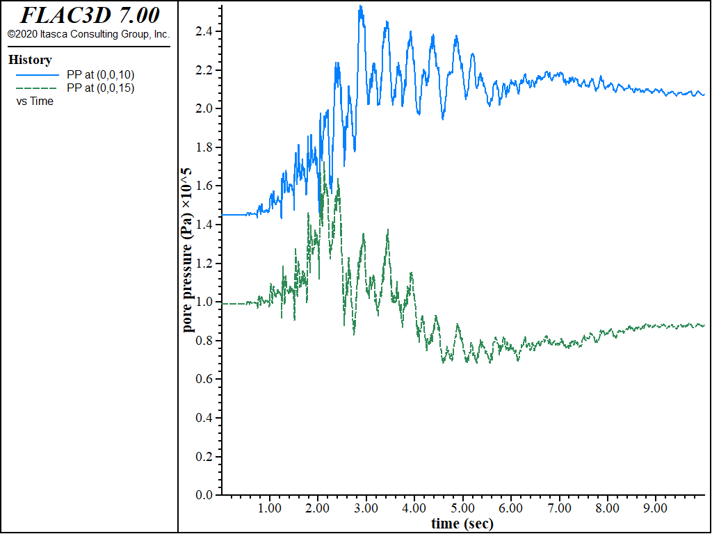

动力耦合力学/地下水模拟流程：土坝地基（有水）
注意
要在 FLAC3D 中查看此项目，请使用菜单命令 。选择“Dynamic/DamFoundationWet”并选择“DamFoundationWet.f3prj”以加载。 所用主数据文件见本示例末尾（main data files）。其余数据文件可在项目中找到。
耦合动力/地下水分析的初始计算阶段与动力力学模拟流程：土坝地基（Procedure for Dynamic Mechanical Simulations: Dam Foundation）中所述的耦合静力/地下水分析流程相同。 这些阶段应达到力学平衡和稳态地下水流动状态。然后按四个组成部分进行动力分析。
通过重复陡峭河谷中土坝的分析来说明动力耦合模拟流程。网格生成阶段（“GenGrid.dat 数据文件（GenGrid.dat）”）、蓄水前的初始静力平衡阶段（“GravLoad.dat 数据文件（GravLoad.dat）”）以及施加水库荷载（“PropPlusWaterLoad.dat 数据文件（PropPlusWaterLoad.dat）”）在耦合模拟中完全相同。
这次假定水库中的水渗入坝体，并在施加地震荷载之前计算稳态 浸润面。先进行非耦合的力学/地下水 分析，以确定稳定流动状态以及蓄水后的最终力学 平衡状态。然后将动力分析作为 耦合模拟进行。该分析的各个阶段描述如下。
坝内含浸润面的初始静力条件
该阶段在按前述“PropPlusWaterLoad.dat 数据文件（PropPlusWaterLoad.dat）”对坝体施加水库荷载之后开始。在坝体上游面施加 力学压力后，坝体变形，应力状态因水库荷载而重新调整。请注意，该荷载被想象为快速发生，因此不允许流体流动。
现在开启流体流动计算模式（配置流体计算模式（model configure fluid））。只关心最终的
流动形态，而不关心其发生的时间。（如果固结时间很
重要，请参阅耦合流动与力学计算（Coupled Flow and Mechanical Calculations）。）
为允许浸润面快速调整，从完全饱和状态开始
（单元网格点初始化饱和度（zone gridpoint initialize saturation） 1.0），并将流体模量设为较低的
值（1 kPa，而纯水的“真实”值为 2 GPa）。流体计算和力学调整分开进行，因为全耦合求解耗时多得多（即本阶段设 模型流体活动命令（model fluid active） 开启（on） 而 模型力学活动命令（model mechanical active） 关闭（off））。将水的抗拉强度限值设为零，以便形成浸润面。在上游面施加与水库水位高程相对应的孔隙压力。下游面沿程孔隙压力固定为零，以允许流体从该面流出；并在下游坡脚处将孔隙压力设为略高于零，以确保该面保持完全饱和。仅流动阶段的数据文件列于“AddWater.dat 数据文件（AddWater.dat）”。
稳态时的孔隙压力分布绘于 图 1（Figure 1）。在流动计算过程中监测坝体中心和下游坡脚附近的 网格点孔隙压力。 这些孔隙压力的历史绘于 图 2（Figure 2）；这些历史很好地表明已达到稳态流动。


图 1：蓄水后的孔隙压力分布。


图 2：在坝下游坡脚（历史 4）和坝体中心（历史 5）记录的孔隙压力历史。
一旦建立稳态流场，就需要进行最终的力学调整，因为：(a) 部分材料现在处于部分饱和状态，因此重力荷载较小；(b) 有效应力状态已改变，可能导致塑性流动。该阶段中， 流体流动和孔隙压力变化被阻止（通过将流体模量临时设为零），因为这里不关注固结过程。参见“MechAdjustWet.dat 数据文件（MechAdjustWet.dat）”。
耦合模拟的动力分析
现在可以进行动力模拟。这是一个不排水分析；假定 地震荷载的持续时间远短于地下水流动引起的孔隙压力 消散时间。此时孔隙压力变化仅由地震振动引起的 力学体积变化所致。
该建模阶段与 动力条件与模拟（Dynamic Conditions and Simulation）中所述的阶段基本相同。唯一的 区别是现在包含了符合实际的水体积模量值。选择模量为 0.2 GPa，比纯水的模量小一个数量级。 该值考虑了土中溶解空气的存在。（进一步讨论参见 流体体积模量（Fluid Bulk Modulus）。）动力分析阶段的数据文件列于“DynamicExcitationWet.dat 数据文件（DynamicExcitationWet.dat）”。
由于坝内孔隙压力，动力加载期间坝体发生附加变形。图 3（Figure 3） 绘制了坝顶下游边缘的 \(x\) 和 \(z\) 方向位移历史， 图 4（Figure 4） 显示了动力阶段结束时的位移云图和 矢量。坝顶的竖向沉降比前一情况计算所得约大 200%（比较 图 3（Figure 3） 与 图 9（Figure 9））。不过，变形在下游坡内的分布比之前更分散（比较 图 4（Figure 4） 与 图 10（Figure 10））。


图 3：坝顶处的位移记录（x 和 z 方向）——耦合响应。


图 4：最终位移大小的云图和矢量——耦合响应。
本次模拟中未出现孔隙压力累积，因为 Mohr-Coulomb 模型本身 不包含循环剪应变对体积应变的影响。动力加载期间孔隙压力确实出现了一些振荡， 如 图 5（Figure 5） 中绘制的孔隙压力历史所示。
本次模拟中还产生了附加剪应变，可从 图 6（Figure 6） 与 图 11（Figure 11） 中应力-应变图的比较看出。


图 5：在坝体中心记录的孔隙压力历史（历史 28 位于 z=10，历史 29 位于 z=15）。


图 6：(0,0,15) 处的剪应力与剪应变关系——Mohr-Coulomb 材料，滞回阻尼，耦合响应。
动孔隙压力产生
使用 Finn/Byrne 本构模型重复动力耦合模拟，以 模拟孔隙压力产生并评估动力液化的可能性。通过将坝体各区的 Mohr-Coulomb 模型替换为 Finn/Byrne 模型，使坝体变为可液化材料。假定修正标贯击数为 15 来确定 Finn/Byrne 参数 \(C_1\) 和 \(C_2\)。 使用该公式（this equation）， \(C_1\) = 0.14736，\(C_2\) = 1.35391。（见 简化模型公式（Simple Model Formulations）。）
本次模拟在模型达到力学平衡且水库蓄水后达到稳态流体流动之后开始（即“MechAdjustWet.dat 数据文件（MechAdjustWet.dat）”之后）。将坝体各区改为 Finn/Byrne 材料，并 赋予 Finn/Byrne 特性。请注意，即使模型被替换，坝区内的应力仍保持不变。然后用新材料检查模型状态，以确保系统仍处于平衡。Finn/Byrne 特性 number-latency 被设为一个很大的数（本例中为 100,000），此时模型的行为与 Mohr-Coulomb 模型相同。检查平衡后将 number-latency 设为 50，以便在循环动力加载期间能够发生剪应变诱发的孔隙压力产生。“FinnMaterial.dat 数据文件（FinnMaterial.dat）”列出了该阶段的命令。
现在通过运行“DynamicExcitationWet_finn.dat 数据文件（DynamicExcitationWet_finn.dat）”重复动力加载阶段。绘制与之前相同的各量。 本例中变形显著增大。坝顶沉降约 14 cm，下游坡水平位移约 34 cm。 比较 图 7（Figure 7） 与 图 3（Figure 3）、图 8（Figure 8） 与 图 4（Figure 4）。
孔隙压力产生现在从 图 9（Figure 9） 中绘制的孔隙压力历史可以明显看出。孔隙压力先累积，随后随着边坡破坏并向下游变形而消散。


图 7：坝顶处的位移记录（x 和 z 方向）——耦合响应——Finn 材料。


图 8：最终位移大小的云图和矢量——耦合响应——Finn 材料。


图 9：在坝体中心记录的孔隙压力历史（历史 24 位于 z = 10，历史 26 位于 z = 15）——Finn 材料。
数据文件
地基材料的布置 - AddWater.dat
;------------------------------------------------------------
; 坝体与地基
; 建立潜水面
;-------------------------------------------------------------------
model restore 'dam2'
model config fluid
zone fluid cmodel assign isotropic
model fluid on
model mech off
zone gridpoint initialize fluid-modulus 1000.0
zone gridpoint initialize saturation 1.0
zone gridpoint initialize fluid-tension 0
zone fluid property porosity 0.3 permeability 1e-8
zone initialize fluid-density 1000
;
zone face apply pore-pressure=3e5 gradient (0,0,-1e4) ...
range group 'Top2'
zone face apply pore-pressure=3e5 range group 'Top3' position-x 70 130
zone face apply pore-pressure=0.1 range group 'Top3' position-x -130 -70
zone face apply pore-pressure=0.0 range group 'Top1'
;
zone history name='pp1' pore-pressure position (-50,-5, 0)
zone history name='pp2' pore-pressure position ( 0, 0,10)
;
model solve fluid ratio-flow 1.0e-5
model save 'dam2wet'
针对新流场的力学调整 - MechAdjustWet.dat
;------------------------------------------------------------
; 坝体与地基
; 稳态渗流计算后的力学调整
;-------------------------------------------------------------------
model restore 'dam2wet'
model fluid off
model mechanical on
zone gridpoint initialize fluid-modulus 0.0
model solve ratio-local 1e-4
model save 'dam2mechwet'
为坝体赋予 Finn/Byrne 材料 - FinnMaterial.dat
;------------------------------------------------------------
; 坝体与地基
; 改用 Finn 模型
;-------------------------------------------------------------------
model restore 'dam2mechwet'
zone cmodel finn range group 'dam'
zone property shear 1e8 bulk 2e8 cohesion=40000 tension 4000 range group 'dam'
zone property friction 40 density 1700 range group 'dam'
zone property constant-1 = 0.14736 constant-2 = 1.35391 range group 'dam'
zone property flag-switch = 1 number-latency = 1000000 range group 'dam'
model solve ratio-local 1e-4
zone property number-latency 50
model save 'dam2wetfinn'
坝/河谷系统的动力激励——耦合分析 - DynamicExcitationWet.dat
;-----------------------------------------------------------------------
; 坝体与地基
; 坝体/河谷体系的动力激励——耦合模拟
;-----------------------------------------------------------------------
model restore 'dam2mechwet'
model dynamic active=on
model large-strain on
zone gridpoint initialize fluid-modulus 2e8
program call 'wave'
[table.as.list('vel') = table.integrate('acc')]
[table.as.list('dis') = table.integrate('vel')]
program call 'baseline' suppress
[baseline('vel',10,-0.00335,8,'cvel')]
[table.as.list('cdis') = table.integrate('cvel')]
; 施加静边界
zone face apply quiet range group 'East' or 'West'
; 向模型底部施加校正后的速度时程
zone face apply velocity (1,0.5,0) table 'cvel' ...
range group 'North' or 'South' or 'Bottom2'
; 重置速度和位移
zone gridpoint initialize velocity (0,0,0)
zone gridpoint initialize displacement (0,0,0)
;
model history name='time' dynamic time-total
zone history name='xabase' acceleration-x position (0,0,-30)
zone history name='xacrest' acceleration-x position (0,0, 30)
zone history name='xdcrest' displacement-x position (-10,0,30)
zone history name='zdcrest' displacement-z position (-10,0,30)
zone history name='ssmid' strain-increment-xz position (0,0,15)
zone history name='sxzmid' stress-xz position (0,0,15)
zone history name='sstoe' strain-increment-xz position (-60,0,5)
zone history name='sxztoe' stress-xz position (-60,0,5)
zone history name='pp3' pore-pressure position ( 0,0,10)
zone history name='pp4' pore-pressure position ( 0,0,15)
zone history name='pp5' pore-pressure position (-50,0,10)
zone history name='pp6' pore-pressure position ( 50,0,10)
; 设置阻尼值
zone dynamic damping hysteretic default -3.156 1.904
zone dynamic damping rayleigh 0.0005 2.0 stiffness
;
model solve time-total 10.0
model save 'dam3wetmc'
坝/河谷系统的动力激励——耦合分析 - DynamicExcitationWet_finn.dat
;-----------------------------------------------------------------------
; 坝体与地基
; 坝体/河谷体系的动力激励——耦合模拟
;-----------------------------------------------------------------------
model restore 'dam2wetfinn' ; Finn 模型模拟'
model dynamic active=on
model large-strain on
zone gridpoint initialize fluid-modulus 2e8
program call 'wave'
[table.as.list('vel') = table.integrate('acc')]
[table.as.list('dis') = table.integrate('vel')]
program call 'baseline' suppress
[baseline('vel',10,-0.00335,8,'cvel')]
[table.as.list('cdis') = table.integrate('cvel')]
; 施加静边界
zone face apply quiet range group 'East' or 'West'
; 向模型底部施加校正后的速度时程
zone face apply velocity (1,0.5,0) table 'cvel' ...
range group 'North' or 'South' or 'Bottom2'
; 重置速度和位移
zone gridpoint initialize velocity (0,0,0)
zone gridpoint initialize displacement (0,0,0)
;
model history name='time' dynamic time-total
zone history name='xabase' acceleration-x position (0,0,-30)
zone history name='xacrest' acceleration-x position (0,0, 30)
zone history name='xdcrest' displacement-x position (-10,0,30)
zone history name='zdcrest' displacement-z position (-10,0,30)
zone history name='ssmid' strain-increment-xz position (0,0,15)
zone history name='sxzmid' stress-xz position (0,0,15)
zone history name='sstoe' strain-increment-xz position (-60,0,5)
zone history name='sxztoe' stress-xz position (-60,0,5)
zone history name='pp3' pore-pressure position ( 0,0,10)
zone history name='pp4' pore-pressure position ( 0,0,15)
zone history name='pp5' pore-pressure position (-50,0,10)
zone history name='pp6' pore-pressure position ( 50,0,10)
;
zone dynamic damping hysteretic default -3.156 1.904
zone dynamic damping rayleigh 0.0005 2.0 stiffness
;
model solve time-total 10.0
model save 'dam3wetfinn'
⇐ Procedure for Dynamic Mechanical Simulations: Dam Foundation | Recommended Steps for Seismic Analyses ⇒
| 这些内容对您有帮助吗？… | FLAC3D © 2019, Itasca | 原文更新于 2020 年 10 月 8 日 |